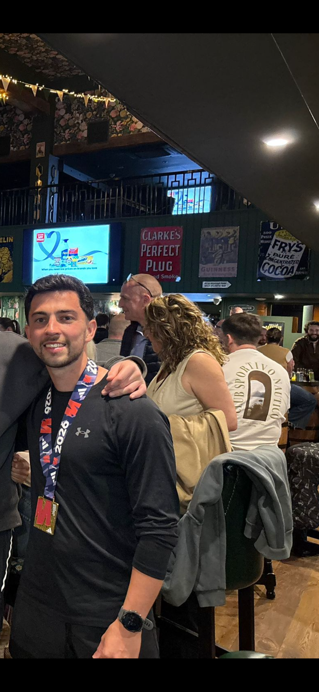

2× Manchester Marathon
Completed the Manchester Marathon twice — 26.2 miles each time through the streets of the city. Running a full marathon once proves you can do it; running it again proves it wasn't a fluke. Both finishes were the result of months of structured training alongside a demanding workload, and each race reinforced that endurance is as much a mental discipline as a physical one.